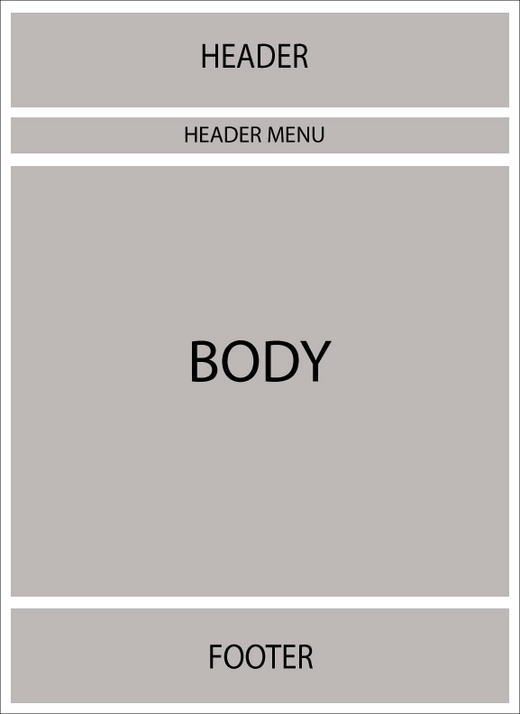
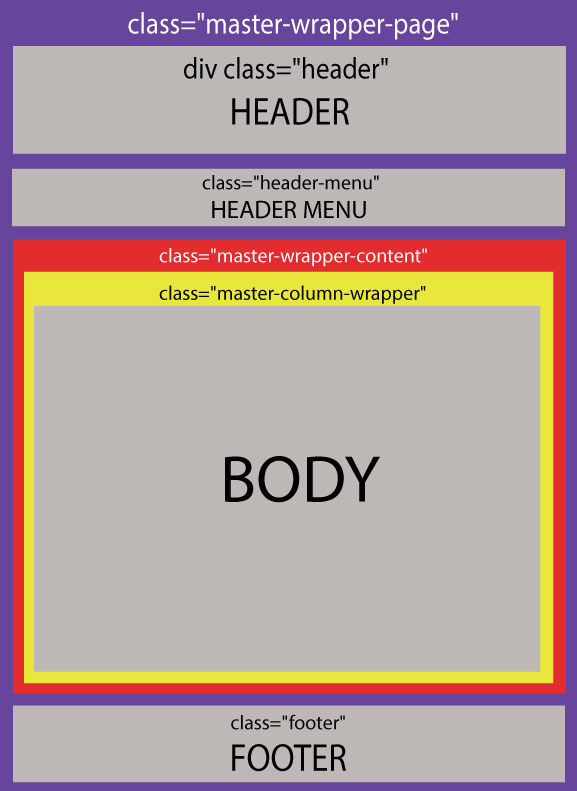
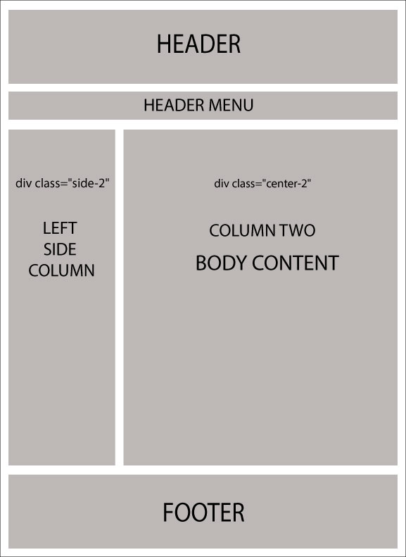

Understanding Layout / Design
What are layouts? Every web developer/designer wants to maintain a consistent look and feel across all of the pages within the website. Back in the day, the concept of "Master Pages" was introduced in ASP.NET 2.0 which helps in maintaining a consistent look of the website by mapping it with .aspx pages.
Razor also supports this similar concept with a feature called "Layouts". It allows you to define a common site template and then inherit its look and feel across all the views/pages on your website.
In nopCommerce, there are 2 different kinds of layouts:
_ColumnsOne.cshtml_ColumnsTwo.cshtml
All these 2 layouts are inherited from one main layout called: _Root.cshtml. The _Root.cshtml itself is inherited from _Root.Head.cshtml. _Root.Head.cshtml is the file you need to look into if you are linked CSS stylesheet and jquery files (you can add/link more .css and .js files here). The location of all these layouts in nopCommerce is as follows: [nopCommerce root directory]/Views/Shared/.... If you are using the source code version then: \Presentation\Nop.Web\Views\Shared\...
Layout of _Root.cshtml

Layout of
_Root.cshtml(in respect of css class)
Now the following 2 layouts override the body of _Root.cshtml:
_ColumnsOne.cshtmlIn this case, there is no change in the layout of the body, so the structure remains pretty much the same as
_Root.cshtml:
_ColumnsTwo.cshtmlIn this case, there are 2 columns in the body structure:
